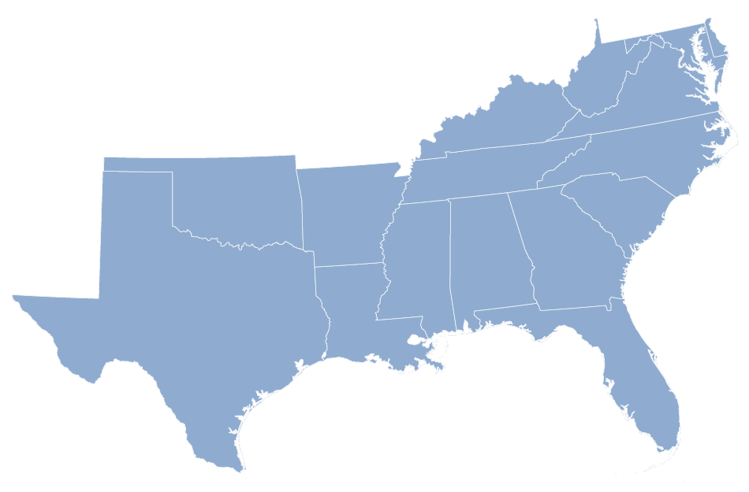

The nation’s official poverty rate in 2015 was 13.5 percent, with 43.1 million people in poverty, 3.5 million fewer than in 2014. The 1.2 percentage point decrease in the poverty rate from 2014 to 2015 represents the largest annual percentage point drop in poverty since 1999. Take a closer look at the poverty threshold in the United States, who they are and where they live. Race and education show up as the leading factors in a person's standard of living.
November 7, 2016
In 2015, the poverty rate and the number in poverty decreased in the South, West and Midwest to 15.3 percent, 13.3 percent and 11.7 percent, respectively. The Northeast did not experience a significant change in the poverty rate or the number in poverty between 2014 and 2015.
| Most Impoverished Region of U.S. |
|---|
| 1. South  |
| 2. West |
| 3. North East |
| 4. Midwest |
| Characteristic | Category | Total People (thousands) | People in Poverty (thousands) | Percent |
|---|